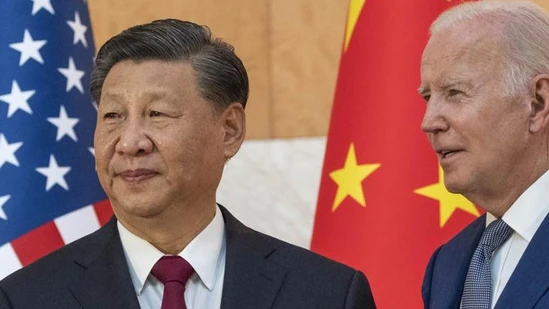

As Pakistan sweat over Shaheen's injury, a former PCB medical officer feels the road ahead for Afridi could be in danger if proper precautions are not taken or he is hurried back.
Pakistan's T20 World Cup final against England ended up being a forgettable affair for two reasons. One was obviously the defeat as Pakistan failed to get over the line in a final twice in three months, and second was the injury to Shaheen Afridi. The knee injury that kept Afridi out of action for over three months, resurfaced as the left-arm pacer put in a slide during an attempt to take the catch, but although he succeeded in dismissing Harry Brook of England, in the process Afridi did his knee some severe damage.
Apart from 'Russia's irresponsible threats of nuclear use' Biden also 'raised concerns about the DPRK's (North Korea) provocative behaviour'.
By HT News Desk US president Joe Biden and China's Xi Jinping agreed Monday 'a nuclear war should never be fought' and 'underscored their opposition to the use of or threat of use of nuclear weapons in Ukraine'. A White House statement following the meeting - on the sidelines of the G20 summit in Indonesia - said multiple issues had been raised, including climate change and human rights (in Xinjiang, Tibet and Hong Kong).